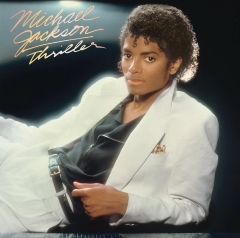
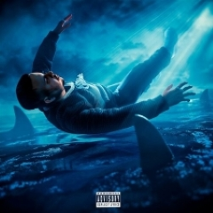
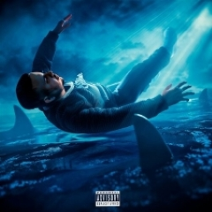

Top álbumes más escuchados en Spotify
Un Verano Sin Ti
1.
"Un Verano sin Ti" de Bad Bunny es una obra que refleja la evolución artística y personal del reconocido artista puertorriqueño. Lanzado en 2022, este álbum se distingue por su capacidad para fusionar diferentes géneros musicales, desde el reguetón hasta el pop y el trap latino, creando una experiencia auditiva dinámica y ecléctica. Bad Bunny explora temas profundos como el amor, la soledad y la reflexión personal a lo largo del álbum, combinando letras introspectivas con ritmos contagiosos que invitan a la reflexión y al movimiento. Con colaboraciones destacadas y una producción innovadora, "Un Verano sin Ti" no solo destaca por su sonido fresco y moderno, sino también por su capacidad para conectar emocionalmente con los oyentes.
Divide
.2
"Divide" es el tercer álbum de estudio del cantautor británico Ed Sheeran, lanzado en 2017. Este álbum se caracteriza por su diversidad musical y letras personales que exploran temas como el amor, el crecimiento personal y las experiencias de vida. Con una mezcla distintiva de pop, folk y elementos de música tradicional irlandesa, Sheeran crea una narrativa musical que va desde baladas íntimas como "Perfect" y "Photograph" hasta canciones más enérgicas como "Shape of You" y "Castle on the Hill". "Divide" ha sido aclamado por su habilidad para conectar emocionalmente con el oyente a través de composiciones sinceras y melodías pegadizas, consolidando a Ed Sheeran como uno de los artistas más destacados de su generación.
STARBOY
3.

"Starboy" es el tercer álbum de estudio del artista canadiense The Weeknd, lanzado en 2016. Este álbum marca un punto de inflexión en su carrera al fusionar sus raíces en el R&B con elementos de pop, electrónica y dance. Con un sonido más pulido y ambicioso, "Starboy" explora temas de fama, riqueza, amor y desamor a través de letras introspectivas y melodías envolventes. El álbum incluye colaboraciones destacadas con artistas como Daft Punk, Lana Del Rey y Kendrick Lamar, ampliando aún más su alcance musical y su impacto cultural. "Starboy" recibió elogios por su producción innovadora y la voz distintiva de The Weeknd, consolidándolo como una figura importante en la música contemporánea.
Hollywood's Bleeding
4.
"Hollywood's Bleeding" es el tercer álbum de estudio del talentoso cantante y rapero Post Malone, lanzado en 2019. Este álbum presenta una mezcla ecléctica de géneros que van desde el rap y el pop hasta el rock y el R&B, reflejando la versatilidad y el estilo único de Post Malone. Con letras que exploran temas de fama, relaciones complicadas y la vida en la industria musical, "Hollywood's Bleeding" ofrece una experiencia auditiva emocionalmente profunda y variada. El álbum incluye colaboraciones con artistas como Travis Scott, Ozzy Osbourne y Swae Lee, ampliando aún más su alcance y atrayendo tanto a fanáticos del hip-hop como del rock. "Hollywood's Bleeding" ha sido aclamado por su producción impecable y la capacidad de Post Malone para conectar con su audiencia a través de canciones pegadizas y letras sinceras.
Sour
5.

"Sour" es el álbum debut de la talentosa cantante y compositora Olivia Rodrigo, lanzado en 2021. Este álbum se destaca por su honestidad emocional y su habilidad para capturar las complejidades del amor adolescente y las experiencias personales. Con un estilo que combina pop rock con influencias de indie y folk, Olivia Rodrigo presenta letras íntimas y sinceras que resonaron profundamente con su joven audiencia. Canciones como "drivers license", "good 4 u" y "deja vu" se destacan por sus letras directas y melodías emocionalmente cargadas, estableciendo a Rodrigo como una voz prominente en la música pop contemporánea. "Sour" recibió elogios por su autenticidad y la capacidad de Rodrigo para expresar emociones universales de una manera que resuena con oyentes de todas las edades.
Top álbumes según Apple Music
The Miseducation of Lauryn Hill
.1
"The Miseducation of Lauryn Hill" es el aclamado álbum debut en solitario de la cantante y rapera estadounidense Lauryn Hill, lanzado en 1998. Este álbum se destaca por su fusión única de hip-hop, R&B, soul y reggae, combinado con letras profundas y emotivas que exploran temas de amor, empoderamiento femenino, espiritualidad y experiencias personales. Lauryn Hill no solo impresiona con su habilidad vocal y lírica, sino también como productora y compositora destacada. El álbum incluye éxitos como "Doo Wop (That Thing)", "Ex-Factor" y "Everything Is Everything", que no solo fueron éxito comercial sino que también dejaron una marca indeleble en la música popular y en la cultura hip-hop. "The Miseducation of Lauryn Hill" ha sido ampliamente elogiado por su autenticidad, innovación y su impacto duradero, consolidando a Lauryn Hill como una figura seminal en la música contemporánea.
Thriller
2.
"Thriller" es el sexto álbum de estudio del icónico artista Michael Jackson, lanzado en 1982. Es ampliamente reconocido como uno de los álbumes más influyentes y exitosos de la historia de la música pop. Con una combinación innovadora de pop, rock, funk y elementos de música disco, "Thriller" capturó la atención del público global con canciones como "Billie Jean", "Beat It" y la emblemática pista titular "Thriller". El álbum no solo estableció récords de ventas, sino que también estableció nuevos estándares en producción musical y videoclips, con Jackson mostrando su incomparable talento como cantante, bailarín y showman. "Thriller" ha sido aclamado por su impacto cultural y su capacidad para trascender generaciones, consolidando a Michael Jackson como el "Rey del Pop" y dejando un legado indeleble en la historia de la música popular.
Abbey Road
.3
"Abbey Road" es el undécimo álbum de estudio de la legendaria banda británica The Beatles, lanzado en 1969. Este álbum es conocido por su sofisticada producción y su mezcla de géneros que incluyen rock, pop, blues y elementos de música psicodélica. "Abbey Road" presenta un sonido distintivo y maduro, con algunas de las composiciones más memorables de la banda, como "Come Together", "Something" y "Here Comes the Sun". Además, el álbum es notable por su innovadora suite de canciones en el lado B, que culmina con la épica "Golden Slumbers/Carry That Weight/The End". Este trabajo demostró la habilidad de The Beatles para reinventarse constantemente y su impacto perdurable en la música popular, consolidándose como uno de los álbumes más influyentes y queridos en la historia del rock.
Purple Rain
.4
"Purple Rain" es el sexto álbum de estudio de Prince, lanzado en 1984, y también es la banda sonora de la película homónima. Este álbum representa un punto culminante en la carrera de Prince, combinando elementos de rock, pop, funk y R&B en una fusión innovadora y atrevida. Con temas que exploran el amor, la espiritualidad y la búsqueda de identidad, "Purple Rain" incluye éxitos atemporales como el emblemático título "Purple Rain", así como "When Doves Cry" y "Let's Go Crazy". La habilidad de Prince como multiinstrumentista y su estilo único como cantante y compositor brillan en este álbum, que recibió aclamación crítica y comercial. "Purple Rain" no solo definió la década de los 80, sino que también estableció a Prince como una fuerza creativa sin igual en la música popular, dejando un legado perdurable en la historia del rock y el pop.
Blond
.5
"Blond" es el segundo álbum de estudio del talentoso cantante y compositor Frank Ocean, lanzado en 2016. Este álbum representa un viaje introspectivo a través de una mezcla ecléctica de géneros como el R&B, el soul, el pop alternativo y el hip-hop experimental. Con letras que exploran temas de identidad, amor, soledad y la complejidad de la vida moderna, "Blond" se destaca por su producción sofisticada y la voz distintiva de Ocean. El álbum incluye canciones como "Nikes", "Ivy" y "Solo", que son tanto íntimas como expansivas en su alcance emocional y musical. "Blond" recibió elogios por su innovación y su capacidad para desafiar las convenciones musicales, consolidando a Frank Ocean como uno de los artistas más influyentes y visionarios de su generación.
 
